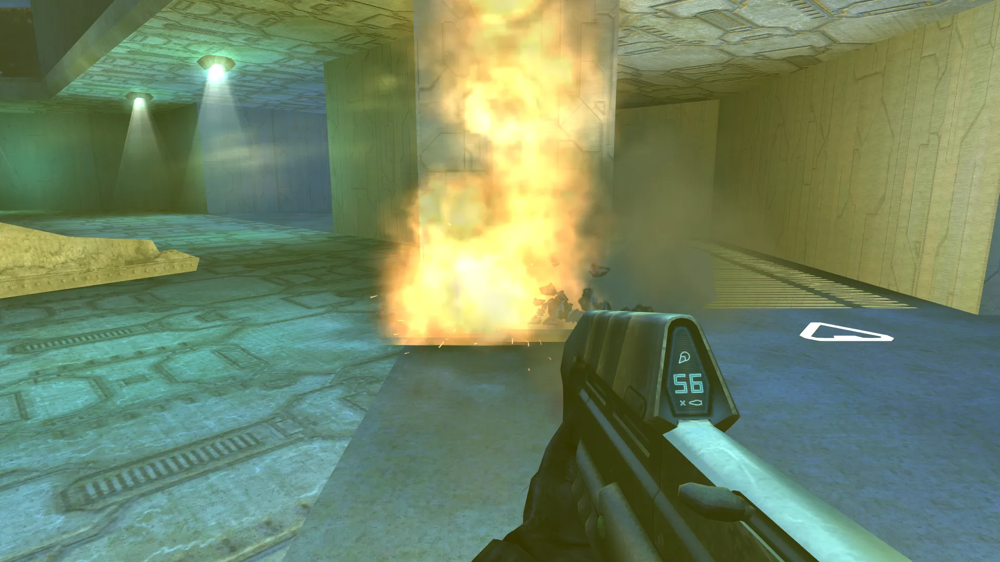
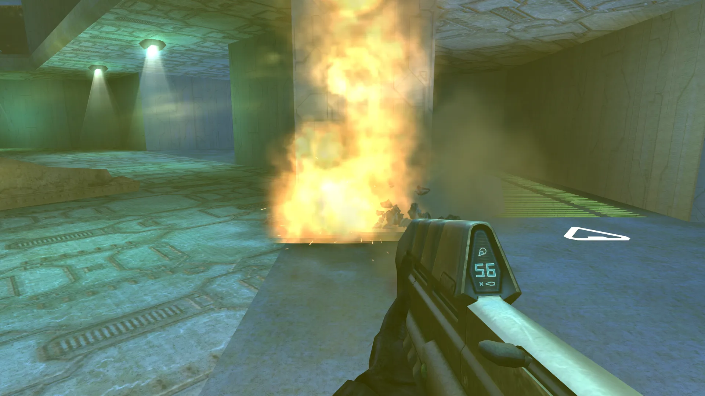
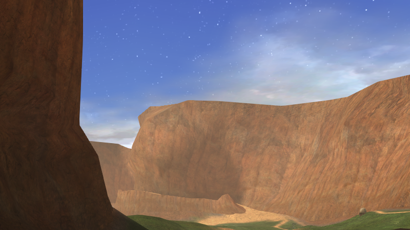
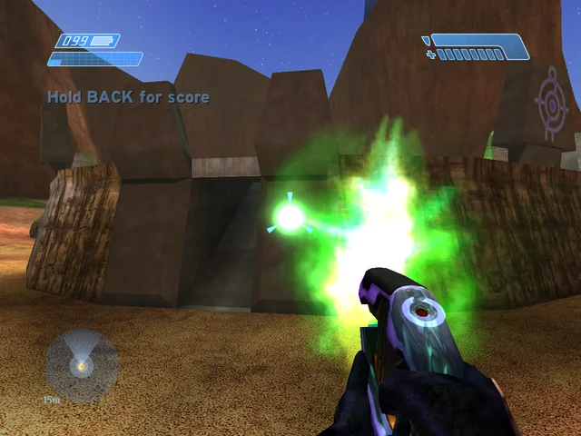
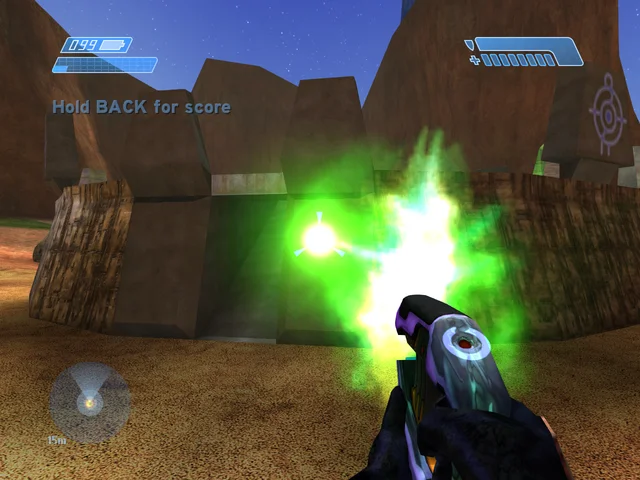

Mac
A Mac app for Apple silicon, with its own Metal renderer.
Metal · macOS 14.4+
Native port · Built from the decompiled Xbox source
The original, recompiled for Mac, Windows, Linux, Android, VR, 4K and 128 players.
The 2001 game, compiled natively from its decompiled source. It plays exactly as it shipped, and new Vulkan and Metal renderers make it look the way you remember.
Plays exactly like the original. Looks the way you remember.
Online and on the LAN, with up to 4 in split screen on each machine.
Play the story with friends over the internet. No servers to set up.
The game in stereo, with your hands doing what the buttons did.
Mac, Linux and Android today. Windows is next.
On Linux, Android and the Steam Frame. Windows is next.
Built for the Mac and Apple silicon.
01 · Dynamic lights
The original lit a whole wall at once. OpenH1 lights every pixel by how far it is from the blast, so light pools near the fire and fades into the dark. Drag across the shot.


OpenH1Real capture, the same moment twice · Derelict, a frag grenade · Dynamic Lights as the game drew them, and OpenH1's Enhanced; everything else the same
02 · Anti-aliasing
The original drew every edge in jagged steps. OpenH1 smooths them with SMAA, and draws the HUD after, pin-sharp. Move the lens along the cliffs.

Real capture, the same moment twice, enlarged 2× so the pixels show · Blood Gulch · no anti-aliasing, as the game drew it, and OpenH1's SMAA


03 · The plasma glow
The original drew a plasma bolt as a flat flare. OpenH1 gives every bolt in flight a soft glow, and lets it light the rock, the ground and the gun in your hands. Tap the shot to flip it.
Real capture, the same moment twice · Blood Gulch, a charged plasma pistol · Dynamic Lights as the game drew them, and OpenH1's Enhanced
04 · Smooth at any refresh rate
The world still runs at 30 ticks a second, exactly as it shipped. OpenH1 draws every frame in between at your display's rate: the camera, every object, every light, the motion tracker.
Real capture, the same run twice: Original, one frame a tick · OpenH1, frames between ticks · 120 and 240 Hz displays get a frame for every refresh
05 · VR on the Steam Frame
Made on a Steam Frame and drawn with Vulkan: the game in stereo, your head tracked, and your hands doing what the buttons did. It plays on PC headsets through OpenXR too.
06 · Platforms
One game, compiled for each machine and drawn by its own renderer. Keyboard and mouse, controllers, touch, or your own two hands.
A Mac app for Apple silicon, with its own Metal renderer.
Metal · macOS 14.4+
64-bit x86 and ARM, in a portable folder that updates itself.
Vulkan 1.3
Fills the screen at its own shape, with Steam Input.
Vulkan · up to 90 Hz
Touch controls with gyro aiming, or a controller.
Vulkan · 64-bit
The VR build, packaged for the headset.
Vulkan · OpenXR
Plays today. A 64-bit Vulkan build, on the same code as Linux, is on the way.
64-bit Vulkan: in progress
07 · Under the hood
What makes it the original, and what it adds. Every line is in the project's documentation.
08 · Your copy
OpenH1 contains none of the game's data. You need your own Xbox disc image of the game. Any version works.
.iso or .xiso) when it asks.